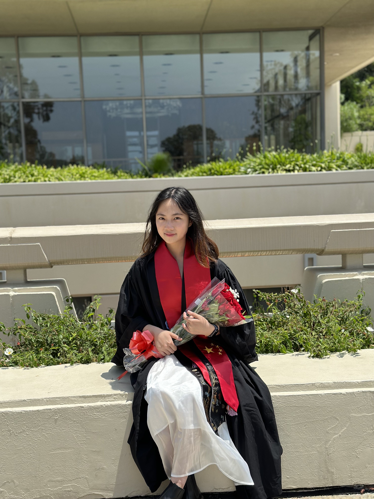

I am Elena Chen. I was born and raised in Chengdu, Sichuan, China. I started my study-abroad journey since 2019 at Occidental College in Los Angeles for pursing my Bachalor's degree in Economics. Currently, I am a Master's student at UChicago to continue my academic journey in Digital Studies.
My research interests include artificial intelligence and LLMs(Large Language Models), circular economy, sustainable economy, labor economy; meanwhile, I am tri-lingual in Mandarin, English, and Japanese.
Below are PDFs of my resume in both English and Chinese. (Japanese not supported temporarily 申し訳ございません...)
English Resume 中文简历 